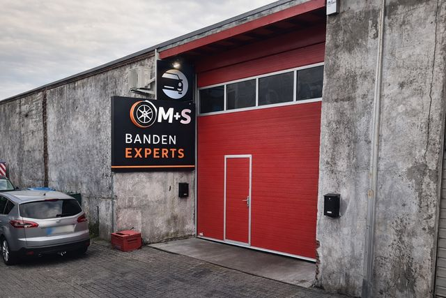

Bandencentrale in Limburg
Nieuwe en jonge occasiebanden vanaf €35 gemonteerd en gebalanceerd
Drie vestigingen in Limburg. Binnenrijden kan meestal dezelfde dag nog — bel even voor je langskomt.
- 3 vestigingen
- Ma–Za 09:00 – 19:00
- Incl. montage & balanceren
Alle topmerken
Michelin, Continental, Pirelli, Bridgestone, Goodyear en Hankook uit voorraad.
Meestal dezelfde dag
Zes dagen per week open van 9 tot 19 uur. Even bellen en je staat erop.
Geen verrassingen
De prijs die je ziet is inclusief montage, balanceren en milieubijdrage.
Waar vind je ons
Drie vestigingen in Limburg
Kom langs in Genk, Hasselt of Sint-Truiden. Bel gerust vooraf, dan ligt je maat klaar.

Transparante tarieven
Wat kost jouw maat?
Vanafprijs per band, inclusief montage, balanceren en Recytyre-bijdrage. Geen verborgen kosten.
Kies je velgmaat
| Maat | Vanaf |
|---|---|
| 13" – 16" | €35 |
| 17" | €45 |
| 18" | €50 |
| 19" | €65 |
| 20" – 22" | €75 |
Ook voor camionetten: €75
| Maat | Vanaf |
|---|---|
| 13" – 14" | €25 |
| 15" – 16" | €30 |
| 17" – 18" | €35 |
| 19" – 22" | €45 |
Ook voor camionetten: €45
Bandenreparatie en vervanging vanaf €5.
Alle prijzen incl. montage, balanceren en milieubijdrage.
Winter, zomer of all-season
Welke banden horen onder je wagen?
Het hangt af van hoeveel je rijdt, waar je rijdt en hoe koud het wordt. Hier is het verschil, zonder verkooppraat.
Winterbanden
Ongeveer oktober tot april
Het rubber blijft zacht onder 7 graden, waar een zomerband hard wordt en grip verliest. Het verschil merk je vooral bij remmen op een koude, natte weg — niet alleen in de sneeuw.
Zomerbanden
Ongeveer april tot oktober
Boven 7 graden remmen ze korter en sturen ze preciezer dan eender welke andere band, droog én nat. Ze slijten ook trager bij warm weer.
All-season
Het hele jaar door
Eén stel dat het hele jaar meekan. Nooit zo goed als een echte winter- of zomerband in zijn eigen seizoen, maar voor wie weinig kilometers maakt en in de stad blijft, is het een prima keuze — en je moet nooit wisselen.
Seizoenswissel
Twee keer per jaar je banden laten wisselen doen we terwijl je wacht. Bel even vooraf, want in oktober en april is het druk — dan zit je sneller aan de beurt.
In België zijn winterbanden niet verplicht. Rijd je naar Duitsland, Oostenrijk of Luxemburg, dan zijn ze daar bij winterse omstandigheden wél verplicht.
Merken uit voorraad
Waar je op rijdt, kies je zelf
Van premium tot budget — we leggen eerlijk uit wat het verschil is voor jouw kilometers.
- Michelin
- Continental
- Pirelli
- Bridgestone
- Goodyear
- Hankook
Veelgestelde vragen
Zit montage in de prijs?
Ja. De prijs die je hierboven ziet is per band en inclusief montage, balanceren en de Recytyre-milieubijdrage. Er komt niets bij.
Moet ik een afspraak maken?
Bel even voor je langskomt. Dan weten we of je maat op voorraad is en kunnen we je meteen verder helpen.
Wat is een jonge occasie?
Een gebruikte band met voldoende profiel die wij hebben nagekeken. Je krijgt er 7 dagen garantie op. Nieuwe banden hebben de wettelijke garantie.
Kan een band hersteld worden?
Vaak wel, afhankelijk van waar de schade zit. Herstellen begint bij €5 — altijd goedkoper dan vervangen. Kom langs en we bekijken het.
Welke merken hebben jullie?
Michelin, Continental, Pirelli, Bridgestone, Goodyear en Hankook, naast voordeligere merken. Vertel ons hoeveel je rijdt, dan zeggen we wat de moeite waard is.
Wanneer moet ik van winter- naar zomerbanden?
De vuistregel is 7 graden: blijft het daar overdag onder, dan rijd je beter op winterbanden. In de praktijk wisselen de meeste mensen rond oktober en rond april. Bel gerust, dan spreken we een moment af.
Zijn winterbanden verplicht in België?
Nee. In België bestaat er geen winterbandenplicht. Rijd je naar Duitsland, Oostenrijk of Luxemburg, dan moet je er bij winterse omstandigheden wel op rijden — iets om te weten als je vanuit Limburg de grens over gaat.
Doen jullie ook camionetten?
Ja. Camionetbanden zijn €75 nieuw en €45 in jonge occasie, ook weer inclusief montage en balanceren.
Wat klanten zeggen
Beoordeeld door wie er langskwam
4,3 van 5 op Google232 reviews Lees ze allemaal →
Weer super goed geholpen lekkeband en zijn m terplaatse meteen komen vervangen . Reeds jaren klant en altijd goed en tegen super prijs geholpen.
Lekke band in Genk, niemand wou ter plekke komen. Zelf band afgedraaid en met taxi naar daar. Binnen 5 minuten geholpen, nieuwe band erop, scherpe prijs! Nog zo’n garagist die weet wat hij doet👌
Ben al bijna 10 jaar klant van hem. Zeer tevreden Vriendelijke medewerkers goede service. En goedkoop prijs. Ik raad aan iederen.
Ze hebben mij geweldig goed geholpen met het wisselen van mijn zomerbanden naar winterbanden. De schroeven waren stuk gedraaid in de Ford garage. Het is hun toch gelukt om ze los te krijgen. Ik ga nog van hun diensten gebruik maken.
Op een zaterdag namiddag gegaan. Zonder afspraak, dadelijk geholpen . Zeggen niet veel maar werken door en goed prijs gemaakt. Zeker niet duur. Top
Ik ben al jaren klant ook bij hun vorige locatie en super tevreden!
Snel geholpen en heel goede prijzen. Nieuwe en tweedehands banden
Zeer vriendelijk personeel, zeer goed service en aantrekkelijke prijzen, kwaliteit- zeker kom ik terug
Zelf een review achterlaten?
Was je tevreden? Een paar zinnen helpen de volgende die twijfelt. Kies de vestiging waar je was:
Banden nodig? Bel even.
Vertel ons je maat, dan zeggen we meteen wat het kost en wanneer je terecht kan.
Ma–Za 09:00 – 19:00